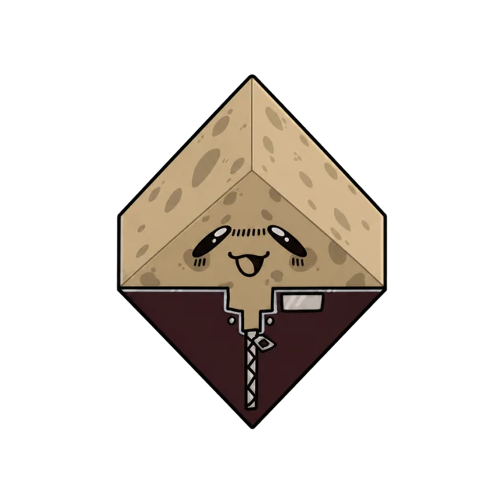
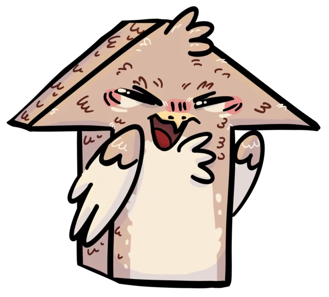

Ball is God?! Putar menara. Menjadi dampaknya.
Sebuah arcade keturunan vertikal yang keras dengan gaya tarik horizontal memutar menara di sekitar Espa yang jatuh. Lewati pendaratan yang aman, lakukan pukulan kombo, dan hancurkan dunia mistis di mana satu pukulan yang tidak dijaga akan mengakhiri lari.
Produksi aktif: sepuluh adegan lokasi, bos, dialog bercabang, dan jalur karma yang mengubah aturan main.
Putarseret menara di sekitar Espa
Risikolewati tiga pendaratan aman
Hancurkanmenerobos platform
Di dalam build saat ini
Karma lebih banyak berubah daripada dialog.
Jalur karma terang, netral, dan gelap mengubah perilaku perisai, isyarat peringatan, agresi musuh, dan fase bos, sehingga cerita mengubah cara Anda bermain.
Status build Produksi aktifSepuluh dunia dialog
Latar belakang dialog untuk kesepuluh dunia, berurutan menurut penurunan dari Ena hingga Deka.


UI produksi saat ini
Pemilihan level, dialog, dan layar hasil di build saat ini.
Ini alur saat ini sesuai urutan yang akan Anda temui: pemilihan level, dialog, pilihan penting, lalu kemenangan atau layar kekalahan tersendiri. Setiap visual di bawah memakai seni dari proyek Unity produksi.
Rute langit memilih level yang dihasilkan di sepuluh bab 100 level.
Menu produksi memetakan sepuluh lokasi dalam bab 100 tingkat dan terbuka langsung ke proses yang dipilih.

 201
201Dialog berlangsung di dalam lokasi.
Potret karakter, seni lokasi, dan pelat nama pembicara berbagi satu bingkai vertikal.


Shash
Kalau begitu, lanjutkan - tapi jangan berpikir ini akan mudah. Tria menanti Anda yang akan membuat segalanya sebelumnya tampak seperti hal sepele belaka.
04 / Pilihan tonggak
Jawabannya menjadi bagian dari keturunan.
Pada tingkat lokal 90 dan 100, panel khusus meminta keputusan untuk menyelamatkan atau membunuh sebelum dialog menyelesaikan masalah tersebut.

Ampuni
Bunuh
05 / Menu hasil
Kemenangan berlanjut. Kekalahan kembali ke tantangan yang sama.
Versi saat ini memiliki dua status hasil terpisah: PanelWin menawarkan pemutaran ulang dan level berikutnya, sementara PanelOver menyimpan satu tindakan pemutaran ulang yang jelas.
Kemenangan · PanelWin
Penurunan selesai
 Main ulang
Selanjutnya
Main ulang
Selanjutnya
Main ulang
Selanjutnya
Karakter dialog
Wajah bertemu saat turun.
Seluruh 25 karakter dengan pasangan potret terbuka dan tertutup produksi yang valid disertakan di bawah. Arahkan atau fokuskan kartu untuk mengganti ekspresi.








Ikhtisar permainan
Ball is God?! adalah game arcade yang keras tentang jatuh menembus menara yang berputar.
Gagasan
Pandu Espa menuruni menara ilahi. Satu kesalahan bisa mengakhiri permainan, dan pilihan besar Anda mengubah cara dunia berjalan.
Build saat ini
Sepuluh adegan lokasi, pembuatan menara prosedural, combo smash, perisai gesek, konfigurasi bos, dialog percabangan, menu produksi, dan potret siap ekspresi diimplementasikan.
Audiens
Pemain yang menyukai game arcade ponsel yang sulit, ritme berisiko-dan-berhadiah, serta bos, dengan cerita untuk diikuti.
Status
Produksi aktif. Pekerjaan terbaru mencakup sistem runtime, seni dunia, pengujian, dan cara game dimainkan di ponsel.
Fitur
Yang Anda lakukan di Ball is God?!
Turun dengan menyeret untuk memutar
Tarikan horizontal memutar menara di sekitar Espa yang jatuh secara otomatis, melapisi celah, bahaya, dan platform aman.
Tekanan arcade yang keras
Satu pukulan tanpa perlindungan mengakhiri permainan, jadi Anda harus membaca menara dan mengatur waktu setiap gerakan.
Bos dan dunia mitis
Sepuluh adegan lokasi, masing-masing dengan bos sendiri, membawa cerita dari satu dunia ke dunia berikutnya.
Pilihan yang mengubah aturan
Dialog belas kasihan, kekuatan dan karma mengubah, aturan perisai, agresi musuh, telegraf dan fase bos.
Putaran permainan
Cara bermain Ball is God?!
- Langkah 01Baca jalur turun
Pindai pijakan, celah, dan bahaya berikutnya, lalu cari jeda waktu yang aman saat Anda jatuh.
- Langkah 02Putar menara
Tarikan horizontal mengubah dunia menjadi Espa, menyelaraskan platform yang aman atau celah yang disengaja.
- Langkah 03Risiko dan hancurkan
Lewati tiga platform untuk melakukan pukulan kombo, lalu tembus struktur sementara perisai menutupi satu kesalahan mematikan.
- Langkah 04Pilih konsekuensinya
Rahmat dan kekuatan membentuk karma, dialog, dan aturan permainan dibawa ke musuh dan bos.
Cerita / dunia
Menara mitos tempat setiap pilihan Anda mengikuti Anda turun.
Ball is God?! dimulai dari ketertarikan masa kecil dengan arcade keturunan vertikal seluler: membaca celah, bereaksi cepat, dan bertahan hidup dengan naluri.
Format ini bisa memuat lebih banyak: bos, karakter berkepribadian, cerita, dan ketegangan moral. Proyek saat ini mengikuti Espa melewati sepuluh adegan lokasi dan deretan karakter aneh, dengan pilihan yang mengubah cerita sekaligus cara bermain.
Maka tujuannya menjadi arcade turun vertikal yang sederhana dengan tekanan pertarungan bos dan konsekuensi RPG berbasis cerita.
- Visi
- Arcade menara berputar dengan kisah mitos
- Cakupan dunia saat ini
- Sepuluh lokasi dan konfigurasi bos
- Tahap cerita
- Draf cerita panjang lengkap
- Status produksi
- Produksi aktif
Sekilas
Kontrol geser yang sederhana, dengan cerita yang mengubah aturan.
Kontrol geser-untuk-memutar langsung terasa. Sisanya datang dari dunia mitos, bos, dan pilihan yang mengubah cara bermain.
Build saat ini sudah memadukan pembuatan menara deterministik, smash berisiko-dan-berhadiah, gagal dalam satu pukulan, bos, dialog bercabang, dan karma yang mengubah gameplay.
- Genre
- Arcade turun vertikal berbasis cerita
- Target platform
- iOS / Android
- Bentuk sesi
- Sesi cepat berbasis keterampilan
- Studio
- WillowinWorlds
Unduh aset
Ball is God?! aset pers dan pencipta
Pratinjau WebP untuk liputan pers, tinjauan penerbit, dan referensi halaman toko. File sumber beresolusi penuh tersedia atas permintaan.
Merek dan karakter
Ikon permainan ditambah 25 karakter terkini yang memiliki potret dialog produksi lengkap. Nama cocok dengan kunci lokalisasi Unity.
EspaPotret karakter pemain.
RevlaPotret dialog produksi.
ShashPotret dialog produksi.
ShushPotret dialog produksi.
ShishPotret dialog produksi.
GigoPotret dialog produksi.
GogaPotret dialog produksi.
GigaPotret dialog produksi.
AskoldPotret dialog produksi.
MirasPotret dialog produksi.
HihPotret dialog produksi.
HehPotret dialog produksi.
HahPotret dialog produksi.
MusyaPotret dialog produksi.
DusyaPotret dialog produksi.
SusyaPotret dialog produksi.
VladusPotret dialog produksi.
FrishaPotret dialog produksi.
LurenPotret dialog produksi.
KurenPotret dialog produksi.
Don YagonPotret dialog produksi.
LuryaPotret dialog produksi.
KhleyaPotret dialog produksi.
VaronPotret dialog produksi.
WhitePotret dialog produksi.
Latar belakang menu
Karya seni produksi terkini yang digunakan oleh sistem pemilihan tingkat langit.
 Menu surgawi
Menu surgawi

Dunia turun vertikal
Kumpulan lengkap sepuluh latar belakang lokasi saat ini, diurutkan dari Ena hingga Deka.
 01 · Dunia langitLatar belakang turun vertikal Ena.
01 · Dunia langitLatar belakang turun vertikal Ena.
 02 · Dunia luar angkasaLatar belakang turun vertikal Dyo.
02 · Dunia luar angkasaLatar belakang turun vertikal Dyo.
 03 · Dunia badaiLatar belakang turun vertikal Tria.
03 · Dunia badaiLatar belakang turun vertikal Tria.
 04 · Dunia saljuLatar belakang turun vertikal Tessera.
04 · Dunia saljuLatar belakang turun vertikal Tessera.
 05 · Dunia gunung berapiLatar belakang Pente; beranimasi di game.
05 · Dunia gunung berapiLatar belakang Pente; beranimasi di game.
 06 · Dunia lautanLatar belakang turun vertikal Eksi.
06 · Dunia lautanLatar belakang turun vertikal Eksi.
 07 · Dunia gurunLatar belakang turun vertikal Epta.
07 · Dunia gurunLatar belakang turun vertikal Epta.
 08 · Dunia hutanLatar belakang turun vertikal Ohto.
08 · Dunia hutanLatar belakang turun vertikal Ohto.
 09 · Dunia guaLatar belakang turun vertikal Ennea.
09 · Dunia guaLatar belakang turun vertikal Ennea.
 10 · Dunia nerakaLatar belakang turun vertikal Deka.
10 · Dunia nerakaLatar belakang turun vertikal Deka.
Latar belakang arcade cerita
Kumpulan lokasi dialog lengkap: Hall of Light plus latar belakang untuk sepuluh dunia.
 00 · Aula CahayaLatar belakang dialog pembuka.
00 · Aula CahayaLatar belakang dialog pembuka.
 01 · Dialog langitLatar belakang cerita Ena.
01 · Dialog langitLatar belakang cerita Ena.
 02 · Dialog luar angkasaLatar belakang cerita Dyo.
02 · Dialog luar angkasaLatar belakang cerita Dyo.
 03 · Dialog badaiLatar belakang cerita Tria.
03 · Dialog badaiLatar belakang cerita Tria.
 04 · Dialog saljuLatar belakang cerita Tessera.
04 · Dialog saljuLatar belakang cerita Tessera.
 05 · Dialog gunung berapiLatar belakang cerita Pente.
05 · Dialog gunung berapiLatar belakang cerita Pente.
 06 · Dialog lautanLatar belakang cerita Eksi.
06 · Dialog lautanLatar belakang cerita Eksi.
 07 · Dialog gurunLatar belakang cerita Epta.
07 · Dialog gurunLatar belakang cerita Epta.
 08 · Dialog hutanLatar belakang cerita Ohto.
08 · Dialog hutanLatar belakang cerita Ohto.
 09 · Dialog guaLatar belakang cerita Ennea.
09 · Dialog guaLatar belakang cerita Ennea.
 10 · Dialog nerakaLatar belakang cerita Deka.
10 · Dialog nerakaLatar belakang cerita Deka.
FAQ Ball is God?!
Pertanyaan umum tentang Ball is God?!
Jenis permainan apa yang Ball is God?!
Arcade turun vertikal yang keras. Anda memutar menara di sekitar Espa yang terus jatuh, melewati pendaratan aman untuk mengisi smash, dan menembus dunia-dunia mitos.
Bagaimana cara bermain Ball is God?!
Tarik secara horizontal untuk memutar menara, lewati tiga platform untuk melakukan smash, dan geser secara vertikal saat perisai cooldown harus menyerap serangan mematikan.
Apakah Ball is God?! sudah rilis?
Belum. Game ini sedang aktif diproduksi, mencakup sistem runtime, seni dunia, konten cerita, dan pengujian. Belum ada tanggal rilis publik. Platform targetnya adalah iOS dan Android.
Apa yang membuat Ball is God?! berbeda?
Game ini memadukan tekanan arcade berisiko-dan-berhadiah dengan sepuluh lokasi serta karma yang mengubah dialog, musuh, isyarat serangan, perisai, dan bos.
Siapa yang membuat Ball is God?!
WillowinWorlds, studio independen yang membuat game puzzle dan arcade untuk ponsel.
Bolehkah saya memakai aset pers untuk Ball is God?!
Boleh, untuk pers, tinjauan penerbit, dan referensi toko. File sumber tetap privat kecuali Anda memintanya kepada kami.
Devlog Ball is God?!
Apa yang berubah dan kapan
- Permukaan dunia dan validasi bahaya
Tampilan karakter, pembuatan level yang deterministik, dan jebakan duri mendapat satu putaran penyempurnaan visual sekaligus validasi.
- Juli 2026Perbaikan UI produksi dan karakter
Pemilihan level, kontrol aksi bersama, bingkai dialog vertikal, dan ekspresi karakter berpasangan kini sudah terpasang.
- Februari 2026Tinjauan ruang lingkup proyek
Tim menyelesaikan tahap integrasi cerita utama dan meninjau skala penuh proyek: sepuluh dunia, pilihan moral, bos, dan banyak akhiran.
- April-Mei 2025Penulisan ulang cerita dan kemampuan
Cerita lengkapnya ditulis ulang, kemampuan karakter ditingkatkan dan konsekuensi moral menjadi lebih jelas.
- Agustus 2024Arah cerita dimulai
Tim memutuskan Ball is God?! harus lebih dari sekadar arcade turun yang sederhana, lalu menambahkan cerita mitos dan visi pilihan moral.
- Juli 2024Konsep asli
Proyek ini bermula sebagai ide game pertama studio: game arcade vertikal yang cepat tentang jatuh menembus menara ilahi.
- Build saat iniArcade dan cerita dalam satu build
Penurunan menara berputar, combo smash, perisai usap, bos, dialog, dan karma kini bekerja bersama dalam satu build.